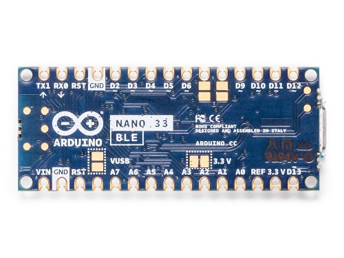
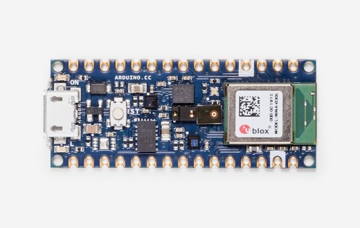

Below is the list of components we will be using to prototype our IoT BLE Devices. We will have three BLE scenarios that really exercise the IoT scenarios and also have different capabilities in IoT Central for telemetry, visualizations and propeties.
We will have a common RGB Led we will use for communicating various states and connections and a battery.
We will be creating our client nodes for our Gateway using three recent boards from Arduino.

The Arduino Nano 33 BLE is an evolution of the traditional Arduino Nano, but featuring a lot more powerful processor, the
nRF52840 from Nordic Semiconductors, a 32-bit ARM® Cortex™-M4 CPU running at 64 MHz. This will allow you to make larger programs
than with the Arduino Uno (it has 1MB of program memory, 32 times bigger), and with a lot more variables (the RAM is 128 times bigger).
The main processor includes other amazing features like Bluetooth® pairing via NFC and ultra low power consumption modes. The Nano
33 BLE comes with a 9 axis inertial measurement unit (IMU) which means that it includes an accelerometer, a gyroscope, and a
magnetometer with 3-axis resolution each. This makes the Nano 33 BLE the perfect choice for more advanced robotics experiments, exercise trackers, digital compasses, etc.
The communications chipset on the Nano 33 BLE can be both a BLE and Bluetooth® client and host device. Something pretty unique in the world of microcontroller platforms. If you want to see how easy it is to create a Bluetooth® central or a peripheral device.


The Arduino Nano 33 IoT is the easiest and cheapest point of entry to enhance existing devices (and creating new ones) to be part of the IoT
and designing pico-network applications. Whether you are looking at building a sensor network connected to your office or home router, or if
you want to create a BLE device sending data to a cellphone, the Nano 33 IoT is your one-stop-solution for many of the basic IoT application scenarios.
The board's main processor is a low power Arm® Cortex®-M0 32-bit SAMD21. The WiFi and Bluetooth® connectivity is performed with a module from u-blox, the NINA-W10, a low power chipset operating in the 2.4GHz range. On top of those, secure communication is ensured through the Microchip® ECC608 crypto chip. Besides that, you can find a 6 axis IMU, what makes this board perfect for simple vibration alarm systems, pedometers, relative positioning of robots, etc
The communications chipset on the Nano 33 BLE can be both a BLE and Bluetooth® client and host device. Something pretty unique in the world of microcontroller platforms. If you want to see how easy it is to create a Bluetooth® central or a peripheral device.
The Nano 33 IoT is a dual processor device that invites for experimentation. Hacking the WiFiNINA module allows you to, for example, make use of both WiFi and BLE / Bluetooth® at once on the board. Yet another possibility is having a super-lightweight version of linux running on the module, while the main microcontroller controls low level devices like motors, or screens. These experimental techniques, require advanced hacking on your side. They are possible via modifying the module's firmware that you can find at our github repositories.


The Nano 33 BLE Sense (without headers) is Arduino’s 3.3V AI enabled board in the smallest available form factor: 45x18mm! The Arduino Nano 33 BLE
Sense is a completely new board on a well-known form factor. It comes with a series of embedded sensors:
The Arduino Nano 33 BLE Sense is an evolution of the traditional Arduino Nano, but featuring a lot more powerful processor, the nRF52840 from Nordic Semiconductors, a 32-bit ARM® Cortex™-M4 CPU running at 64 MHz. This will allow you to make larger programs than with the Arduino Uno (it has 1MB of program memory, 32 times bigger), and with a lot more variables (the RAM is 128 times bigger). The main processor includes other amazing features like Bluetooth® pairing via NFC and ultra low power consumption modes
The main feature of this board, besides the impressive selection of sensors, is the possibility of running Edge Computing applications (AI) on it using TinyML. You can create your machine learning models using TensorFlow™ Lite and upload them to your board using the Arduino IDE. Arduino’s developer Sandeep Mistry and Arduino’s advisor Dominic Pajak have prepared an introductory tutorial to AI on the Nano 33 BLE Sense, but also a more advanced guide on color detection.
The communications chipset on the Nano 33 BLE can be both a BLE and Bluetooth® client and host device. Something pretty unique in the world of microcontroller platforms. If you want to see how easy it is to create a Bluetooth® central or a peripheral device.